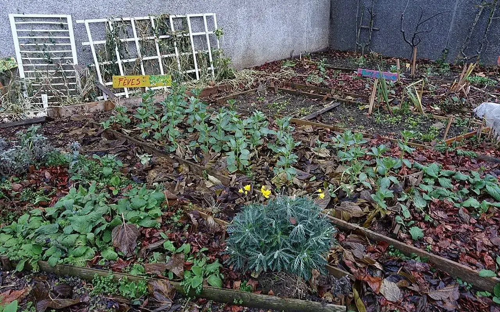

Dossier public
Espace entreprises
Organiser le don, le réemploi, la déconstruction s’lective et les partenariats dans un cadre utile aux territoires.

Don de matériaux
Orienter les matériaux réemployables vers des usages solidaires.
Réemploi
Structurer des solutions concrètes pour éviter le gaspillage.
Déconstruction s’lective
Identifier les gisements et organiser leur récupération lorsque le cadre le permet.
Valorisation RSE
Documenter une contribution responsable sans communiquer de chiffres non vérifiés.
Partenariats
Construire des relations utiles, transparentes et cohérentes avec les besoins locaux.
Mécénat
Structurer un soutien financier, matériel ou de compétence selon le cadre associatif.
Contribuer au programme Bien Solidaire
Une entreprise peut soutenir la rénovation d'un bien candidat par du don de matériaux, du mécénat, des compétences techniques, de la logistique ou une expertise bâtiment. Toute contribution doit être tracée et validée avant communication.
Avantages pour les entreprises
RéemploiUtilité territorialeContribuer à réduire le gaspillage et à soutenir des projets locaux.
RSETraçabilité documentéeStructurer un suivi documenté des contributions lorsque l'outil sera opérationnel.
MécénatCadre transparentéchanger sur les formes de soutien compatibles avec l'association.
Formulaire partenariat entreprise
Pour les entreprises : une contribution territoriale utile, traçable et sobre
Une entreprise peut contribuer à TVF par des matériaux, du mobilier, des compétences, un appui logistique, un local, un soutien financier ou une expertise technique. L'objectif n'est pas de créer une vitrine de communication, mais d'orienter des ressources réelles vers des projets qualifiés, utiles au territoire et suivis dans le temps.
RSE concrète
Relier la responsabilité sociale et environnementale à des actions visibles : réemploi, économie circulaire, soutien à l'habitat, revitalisation commerciale, insertion et services aux habitants.
Réduction du gaspillage
Surplus de chantier, invendus, mobilier professionnel, équipements ou matériaux peuvent être qualifiés avant orientation, lorsque leur état, leur sécurité et leur logistique le permettent.
Ancrage local
Une entreprise peut soutenir un projet sur son territoire d'implantation : centre-ville, quartier, commune, bassin d'emploi ou territoire ultramarin, sans inventer de partenariat ou de résultat non confirm².
Mobilisation interne
Des salariés peuvent contribuer par du mécénat de compétences, des ateliers, une expertise métier ou un appui logistique, avec un cadre d'assurance, de planning et de responsabilités.
Visibilité responsable
La mention publique d'une contribution doit rester proportionnée, validée et factuelle : nature de l'aide, projet concerné, statut, limites et données publiables.
Documentation d'impact
Lorsque l'action est réalisée, TVF peut structurer un suivi : ressource confiée, affectation, projet bénéficiaire, étapes, indicateurs et preuves disponibles.
La convention entreprise doit clarifier
| Sujet | Contenu attendu | Pourquoi c'est important |
|---|---|---|
| Nature de la contribution | Matériaux, mobilier, compétences, local, financement, transport, stockage ou expertise. | Éviter les malentendus et décrire une contribution réelle. |
| Qualité et sécurité | État, photos, contraintes, normes, responsabilités, conditions de collecte ou refus. | Ne pas transformer le réemploi en transfert de risque. |
| Traçabilité | Origine, date, quantité, destination, statut de validation et documents disponibles. | Permettre un reporting solide sans chiffre inventé. |
| Communication | Logo, mention, photo, citation, calendrier de publication et validation préalable. | Garantir une communication institutionnelle fiable. |
| Cadre financier | Dons, mécénat, prestation, achat solidaire ou prise en charge de coûts, selon le cas. | Adapter le montage aux règles applicables et aux conseils comptables/juridiques de chaque partie. |
Prudence : TVF ne promet aucun avantage fiscal automatique. Les éventuels traitements comptables ou fiscaux doivent être vérifiés selon le statut de l'association, la nature de la contribution et les conseils des parties.
Construire une coopération entreprise
Entreprises engagées
Transformer une contribution RSE en impact territorial documenté
Matériaux, locaux, compétences, logistique, mécénat ou accueil de publics en insertion : chaque contribution doit être qualifiée, tracée et reliée à un projet utile.
Proposer un engagement entrepriseGalerie des entreprises engagées
LogoFicheTerritoireEngagement
Affichage après accord, convention et validation des informations publiables.
Rejoindre TVF
Transformer une contribution en action territoriale
Une entreprise peut proposer des matériaux, des compétences, des locaux ou un soutien financier dans un cadre tracé.
CollectivitéDevenir territoire partenaireDiagnostic, données, coopération, indicateurs.
PropriétaireProposer un bienLogement, commerce, bâtiment ou terrain à qualifier.
EntrepriseContribuer à l'économie circulaireMatériaux, compétences, locaux, mécénat.
AssociationConstruire une action localeBesoins, publics, bénévolat, animation.
CitoyenSignaler une ressourceLieu vacant, matériau disponible, besoin local.
InvestisseurFinancer un impact vérifiableProjet qualifié, budget, reporting, transparence.
BénévoleRejoindre le mouvementMissions, chantiers, documentation, terrain.
Lecture opérationnelle
Comprendre rapidement Espace entreprises
| Question | Réponse TVF | Preuve ou livrable attendu |
|---|---|---|
| Quel besoin traite la page ? | Qualifier une situation territoriale avant de proposer une action. | Fiche de lecture, diagnostic ou formulaire adapté. |
| Quels acteurs sont concernés ? | Collectivités, propriétaires, entreprises, associations, financeurs ou citoyens selon le sujet. | Interlocuteur identifié, rôle clarifié, accord de publication si nécessaire. |
| Comment passer à l'action ? | Documenter le besoin, choisir le parcours, rassembler les pièces et cadrer les responsabilités. | Fiche projet, convention, budget, calendrier et indicateurs. |
Partenaires et financeurs
Du constat à l'action : Espace entreprises
Cette page clarifie les contributions possibles et les garanties attendues avant toute publication.
Problème
Un projet territorial à besoin de moyens financiers, techniques, fonciers et humains clairement affectés.
Donnée utile
Repere de gouvernance : aucun partenaire, mécène ou financeur n'est affiche sans accord et information verifiable.
Solution TVF
TVF prépare des fiches projet, budgets, conventions, pieces justificatives, jalons et indicateurs de restitution.
Méthode
Chaque contribution doit etre rattachee à un usage, un territoire, un calendrier et un suivi d'impact.
Acteurs
Entreprises, fondations, mécènes, investisseurs à impact, collectivités, associations et citoyens.
Impact visé
Transformer une contribution en preuve d'utilite territoriale, sociale et environnementale.
FAQ
Questions fréquentes pour les entreprises
Espace entreprises précise les modalités de contribution, de visibilité et de suivi d'impact.
Quelle contribution une entreprise peut-elle proposer ?
Dans Espace entreprises, matériaux, mobilier, compétences, locaux, logistique, financement, mécénat ou appui technique peuvent être étudiés.
Comment la visibilité est-elle encadrée ?
Pour Espace entreprises, aucun logo ni statut de partenaire n'est publié sans accord explicite, cadre de coopération, périmètre clair et validation de la communication.
Quel intérêt RSE ?
Espace entreprises permet de documenter une contribution utile : réduction du gaspillage, ancrage territorial, économie circulaire et impact social mesurable.
Passer à l’action
Choisir le parcours adapté à votre rôle
Chaque demande doit être orientée vers un cadre clair : besoin territorial, propriétaire, ressource, financement, bénévolat ou coopération institutionnelle.